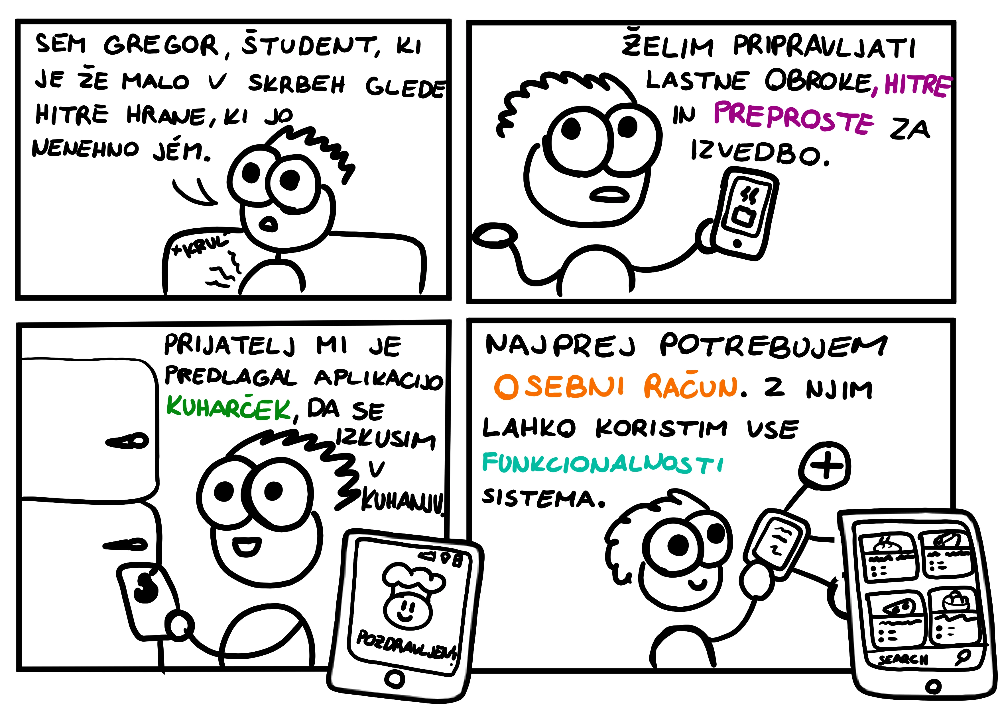
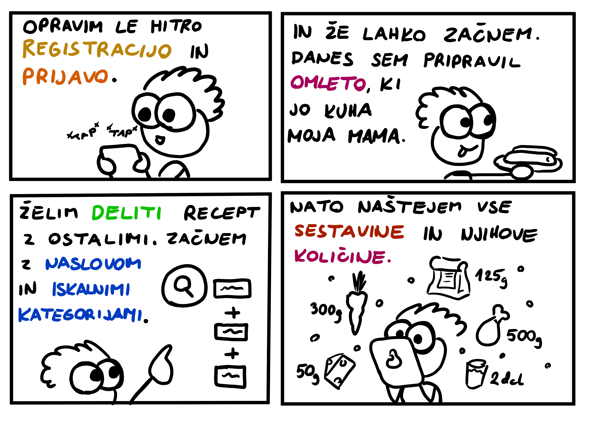
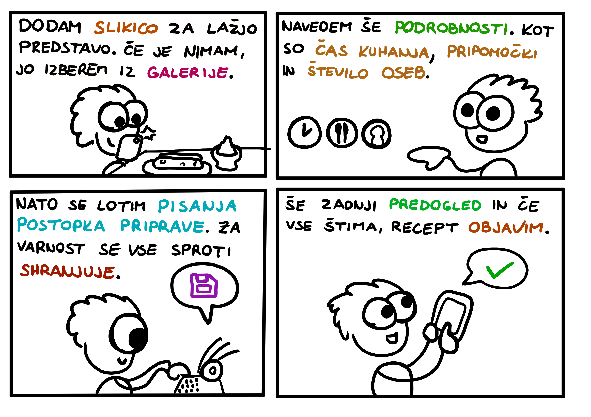
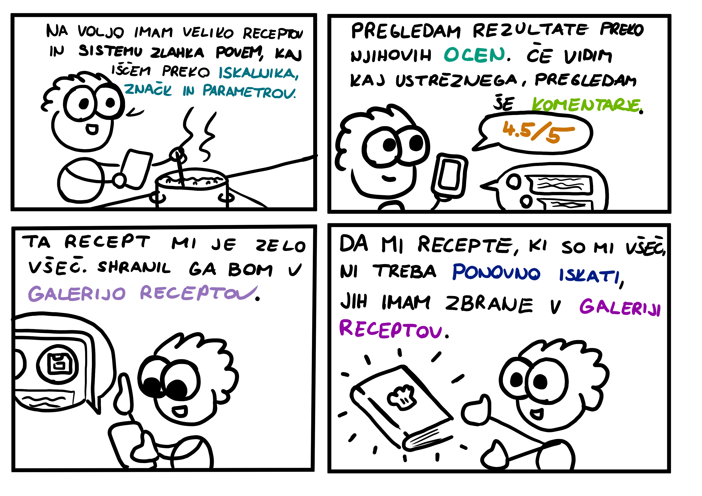
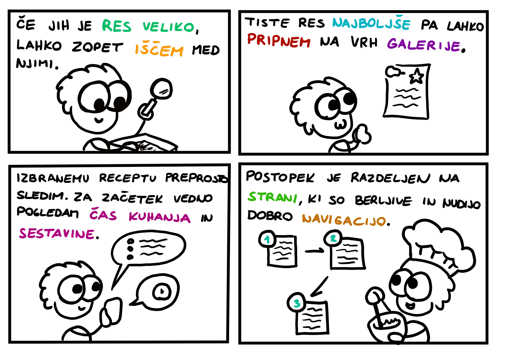
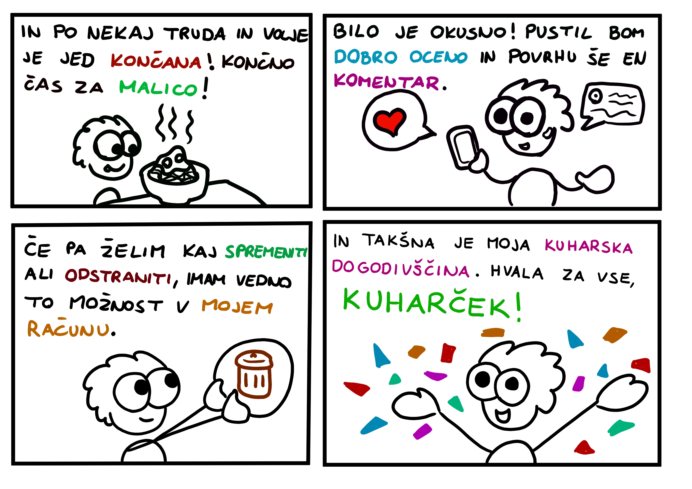

STORYBOARD
Ko smo dokončali Card Sorting in nato določili funkcionalnosti naše aplikacije, smo se lotili procesa izdelave
storyboarda
Storyboard je skica oziroma hiter grafični prikaz, kako bi naj izgledal potek uporabe naše aplikacije. Znotraj želimo
zajeti večino ali vse funkcionalnosti in jih predstaviti tako, da bodo razumljive bralec in investitorjem. Sami smo uporabili
tudi barvno olepšavo besedila, saj smo s tem želeli pritegniti pozornost na najpomembnejše elemente, ki jih z našim storyboardom
želimo predstaviti.
V storyboardu sledimo naši personi Gregorju in njegovo izkušnjo z aplikacijo Kuharček.





